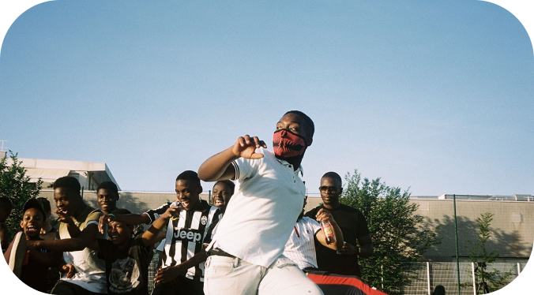
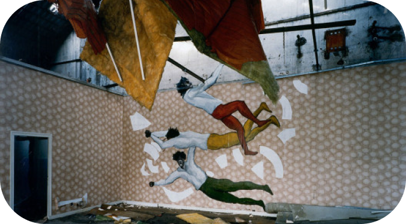

La galerie Banlieues Chéries
L'exposition Banlieues Chéries donne de la voix aux quartiers.
Plongez au cœur des banlieues françaises à travers des récits, des images et des témoignages qui bousculent les idées reçues.
Banlieues Chéries vous invite à explorer les histoires de vies, la créativité et la richesse culturelle de ces territoires souvent mal connus.
On vous invite à venir ressentir, comprendre et partager ces réalités singulières.
Une exposition immersive qui questionne, émerveille et ouvre le dialogue.
Un rendez-vous à ne pas manquer pour tous les curieux et les amoureux de la diversité !
L'exposition rassemble des centaines d'oeuvres d'art qui explore la temporalité et l'art en Banlieue :

Le Grand Paris

L'art engagé en banlieue